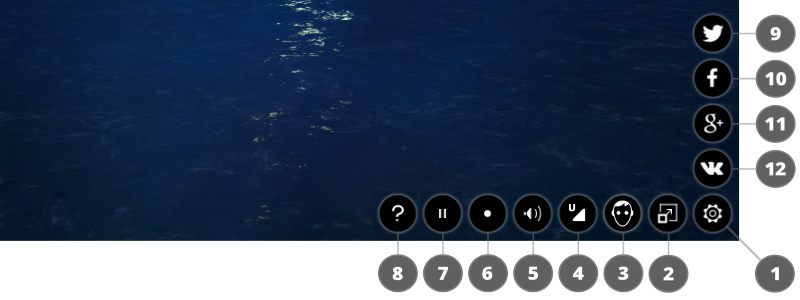

Web Player¶
Table of Contents
The web player is a special application for rendering models and scenes in a demonstration mode.
Desktop version:

Mobile version:
{kind=link}
Usage¶
You can copy the directory containing the web player files, namely
deploy/apps/webplayer, from the Blend4Web SDK distribution and deploy it
on your website. You can place the exported scene files on your website
and specify the path to them (absolute or relative) with the load web
player parameter.
When you export into a single HTML file the web player interface is integrated automatically into it.
Control Panel¶
The web player’s control panel is shown below.
{kind=link}
- show / hide control panel;
- fullscreen mode on / off;
- stereo rendering on / off;
- set the scene quality;
- sound on / off;
- camera auto rotation mode on / off;
- run / stop the engine;
- open the help window;
- tweet;
- share via Facebook;
- share via Google+;
- share via VK;
- share via Weibo.
Attributes¶
Web player accepts attributes from the browser address line:
{kind=link}
- the special attribute
loadis used to load the scene, this attribute contains relative path to a JSON file. - in case of a WebGL error the optional
fallback_imageattribute is used to setup the background image instead of 3D content. - in case of a WebGL error the optional
fallback_videoattribute is used to setup the background video instead of 3D content. Can be used many times to add more video formats. - the optional
show_fpsattribute is used to display the FPS counter in the player’s top right corner. - optional parameter
autorotateis used to enable automatic camera rotation just after the scene loads. - the
compressed_texturesoptional parameter is used to enable loading of minified and compressed textures (in DDS format). - the
compressed_textures_pvroptional parameter is used to enable loading of textures compressed in PVRTC format. This parameter is used with thecompressed_texturesparameter. - the
compressed_gzipoptional parameter is used to enable loading of GZIP compressed resources such as ”.json.gz”, ”.bin.gz”, ”.dds.gz” and ”.pvr.gz”. - optional
alphaparameter is used to enable transparency for the rendering area. - the optional
no_socialattribute is used to disable social networks buttons on the control panel. - the optional
socialsattribute is used to selectively enable and disable social network buttons on the control panel. This attribute should look likesocials=<...>, where<...>is a set of letters corresponding to the social network buttons you want to enable (ffor Facebook,vfor VK,tfor Twitter,wfor Weibo andgfor Google+). The order of letters sets the order in which the buttons will appear on the screen.
Note
If both fallback_image and fallback_video parameters are specified, the fallback_image parameter is used.
Scene Name as Title¶
By default the Web Player has the Blend4Web Web Player title. Assigning the meta tag title on the scene in Blender you can change that value to something else.

Scene Errors¶
If the player is used incorrectly it displays the corresponding errors.
- The
loadattribute specifies a wrong path to the JSON file or the file is corrupt.

- The
loadattribute is not found or is void.
{kind=link}
- WebGL initialization error. Please, look at this page for the solution.